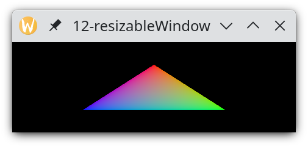

Pokud změníme velikost vulkaního okna v aplikaci z minulého dílu, může být aplikace ukončena chybovou hláškou. Dnes si ukážeme, jak správně ošetřit tuto situaci.
V minulém díle jsme zobrazili první obrázek do okna. Avšak pokud bychom se pokusili změnit jeho velikost a například potáhli za okraj okna, aplikace bude na mnoha platformách ukončena chybou podobné této:
Failed because of Vulkan exception: vk::Queue::presentKHR: ErrorOutOfDateKHR
Protože je swapchain abstrakce pro skupinu vk::Image obrázků, a tyto obrázky mají určité rozměry, které obyčejně přesně souhlasí s rozměry surface, na kterém jsou zobrazovány, znamená to, že při změně velikosti okna a následně i změně rozměrů surface potřebujeme změnit i velikost těchto vk::Image obrázků.
V praxi změnu velikosti prezentovaných obrázků provádíme tak, že zrušíme starý swapchain, čímž jsou zrušeny i jeho prezentovatelné vk::Image obrázky. Následně vytvoříme nový swapchain s novými rozměry. Během procesu jeho vytváření jsou automaticky vytvořeny prezentovatelné obrázky již nových rozměrů, které jsou tomuto swapchainu předány do vlastnictví.
Můžeme si stáhnout zdrojáky a zkusit je zkompilovat.
Hlavní místo, kde budeme detekovat změnu velikosti okna a surface je frame callback. Projděme si tedy všechny změny, které jsou v ní udělány:
window.setFrameCallback(
[]() {
// wait for previous frame
// if still not finished
presentationQueue.waitIdle();
První změna je přesunutí čekání na prezentaci snímku z konce frame callbacku na jeho začátek. Nečekáme tedy na konci callbacku na snímek, jehož rendrování probíhá, ale necháme tuto činnost doběhnout asynchronně. Takto nebude blokován procesor. Pouze v případě, že přišel druhý callback a práce na předchozím snímku ještě nebyla dokončena, tak na předchozí snímek budeme čekat.
A proč potřebujeme čekat? Jeden praktický důvod tkví v tom, že nechceme rendrovat mnoho snímků paralelně. Zvyšuje to latenci mezi započetím rendrování snímku a jeho objevením se na obrazovce. Z pohledu latence je nejlepší vždy rendrovat jen jeden snímek. Opravdová katastrofa by pak nastala, pokud by frame callback přicházel častěji než grafická karta stíhá rendrovat a zobrazovat. Mohlo by pak dojít k situaci, že máme desítky či stovky snímků, jejichž rendrování probíhá, až dojde k vyčerpání paměti, zahlcení grafické karty nebo něčemu podobnému. V lepším případě pak dojde jen k pádu aplikace a v horším případě k zahlcení celého systému.
Otázce latence snímku se budeme věnovat více v příštím díle. Zde se spokojíme s konstatováním, že jednoduchým řešením je vždy před započetím rendrování nového snímku počkat na dorendrování toho předchozího a případně i na jeho prezentaci na obrazovku.
Následuje kód získání obrázku:
// acquire image
uint32_t imageIndex;
vk::Result r =
device->acquireNextImageKHR(
swapchain.get(), // swapchain
numeric_limits<uint64_t>::max(), // timeout
imageAvailableSemaphore.get(), // semaphore to signal
vk::Fence(nullptr), // fence to signal
&imageIndex // pImageIndex
);
if(r != vk::Result::eSuccess) {
if(r == vk::Result::eSuboptimalKHR) {
window.scheduleSwapchainResize();
cout << "acquire result: Suboptimal" << endl;
return;
} else if(r == vk::Result::eErrorOutOfDateKHR) {
window.scheduleSwapchainResize();
cout << "acquire error: OutOfDate" << endl;
return;
} else
throw runtime_error("Vulkan error: vkAcquireNextImageKHR failed with error " + to_string(r) + ".");
}
První změna, kterou vídíme, je zavolání přetížené metody acquireNextImageKHR(), která nevyhazuje výjimky při chybě, ale místo toho nám vrátí chybový kód. Výjimku opravdu nechceme. Pokud dojde ke změně velikosti okna, chceme si chybový kód obsloužit sami. Konstrukci try/catch bychom sice také mohli použít, nicméně výjimka je výjimečná věc a změna velikosti okna nespadá mezi výjimečné věci. Proto ušetříme cenu vyhození a odchycení výjimky a vše si ošetříme vlastním kódem.
Po zavolání metody acquireNextImageKHR() porovnáme kód výsledku operace s eSuccess. Pokud bylo vráceno něco jiného, provedeme ošetření této situace.
První možnost je, že kód výsledku operace je eSuboptimalKHR. To na jedné straně indikuje úspěch. Na druhé straně to indikuje neoptimálnost výsledku. Například vybraný vk::Image může být sice zobrazen, ale ne v optimální kvalitě. To se může stát třeba, když okno změnilo své rozměry a obraz by musel být přetransformován (scale) do nových rozměrů okna. My situaci ošetříme tak, že nebudeme provádět žádné suboptimální zobrazování. Místo toho naplánujeme swapchain resize a provedeme return z frame callbacku. Nic tedy nevyrendrujeme, ale v zápětí nám VulkanWindow zavolá swapchain resize callback s novými rozměry okna. Tam tedy dojde k likvidaci současného neoptimálního swapchainu a k vytvoření nového. Po té nám VulkanWindow znovu zavolá frame callback, který již bude mít k dispozici swapchain nových rozměrů.
Druhá možnost je, že kód výsledku operace je eErrorOutOfDateKHR. Tento kód značí chybu a žádný obrázek nebyl přepnut do stavu "acquired". Chyba značí, že swapchain je neaktuální a již nemůže být použit k prezentaci. My tedy opět naplánujeme swapchain resize a opět provedeme return z frame callbacku, aniž bychom cokoliv vyrendrovali. VulkanWindow opět provede zavolání swapchain resize callbacku následovaném frame callbackem, který již bude mít k dispozici nový swapchain.
Pokud dostaneme jakýkoliv jiný kód výsledku operace, vyhodíme výjimku.
Pak nahrajeme nový obsah command bufferu:
// record command buffer
commandBuffer.begin(
vk::CommandBufferBeginInfo(
vk::CommandBufferUsageFlagBits::eOneTimeSubmit, // flags
nullptr // pInheritanceInfo
)
);
commandBuffer.beginRenderPass(
vk::RenderPassBeginInfo(
renderPass.get(), // renderPass
framebuffers[imageIndex].get(), // framebuffer
vk::Rect2D(vk::Offset2D(0, 0), window.surfaceExtent()), // renderArea
1, // clearValueCount
&(const vk::ClearValue&)vk::ClearValue( // pClearValues
vk::ClearColorValue(array<float, 4>{0.0f, 0.0f, 0.0f, 1.f})
)
),
vk::SubpassContents::eInline
);
// rendering commands
commandBuffer.bindPipeline(vk::PipelineBindPoint::eGraphics, pipeline.get()); // bind pipeline
commandBuffer.draw( // draw single triangle
3, // vertexCount
1, // instanceCount
0, // firstVertex
0 // firstInstance
);
// end render pass and command buffer
commandBuffer.endRenderPass();
commandBuffer.end();
Oproti minulému dílu jsme přidali kód rendrování trojúhelníku, který jsme převzali z osmého dílu našeho tutoriálu. Tento command buffer pak odešleme k provedení a pak k prezentaci:
// submit frame
graphicsQueue.submit(
vk::ArrayProxy<const vk::SubmitInfo>(
1,
&(const vk::SubmitInfo&)vk::SubmitInfo(
1, &imageAvailableSemaphore.get(), // waitSemaphoreCount + pWaitSemaphores +
&(const vk::PipelineStageFlags&)vk::PipelineStageFlags( // pWaitDstStageMask
vk::PipelineStageFlagBits::eColorAttachmentOutput),
1, &commandBuffer, // commandBufferCount + pCommandBuffers
1, &renderingFinishedSemaphore.get() // signalSemaphoreCount + pSignalSemaphores
)
),
vk::Fence(nullptr)
);
// present
r =
presentationQueue.presentKHR(
&(const vk::PresentInfoKHR&)vk::PresentInfoKHR(
1, &renderingFinishedSemaphore.get(), // waitSemaphoreCount + pWaitSemaphores
1, &swapchain.get(), &imageIndex, // swapchainCount + pSwapchains + pImageIndices
nullptr // pResults
)
);
if(r != vk::Result::eSuccess) {
if(r == vk::Result::eSuboptimalKHR) {
window.scheduleSwapchainResize();
cout << "present result: Suboptimal" << endl;
} else if(r == vk::Result::eErrorOutOfDateKHR) {
window.scheduleSwapchainResize();
cout << "present error: OutOfDate" << endl;
} else
throw runtime_error("Vulkan error: vkQueuePresentKHR() failed with error " + to_string(r) + ".");
}
Kód pro submit() je stejný, jako v minulém díle. Nicméně kód prezentKHR() je opět upraven, aby volal jinou přetíženou verzi metody, která nevyhazuje výjimky, ale vrací výsledek operace. Pokud tedy výsledek není eSuccess, provedeme zase ošetření situace.
Oproti acquireNextImageKHR() bereme v potaz, že již probíhá rendering obrázku a že již proběhl i pokus o naplánování prezentace tohoto obrázku. Pokud tedy dostaneme kód eSuboptimalKHR, znamená to, že i naplánování prezentace proběhlo úspěšně, ač v neoptimální kvalitě. Jinými slovy, k prezentaci dojde, nicméně my naplánujeme další snímek, kterému bude předcházet swapchain resize. Rendering a prezentace tohoto dalšího snímku by tak již měla proběhnout v optimální kvalitě.
Pokud presentKHR() vrátí kód eErrorOutOfDateKHR, pokus o naplánování prezentace nebyl úspěšný. V tom případě rendrovací práce na tento snímek zůstane promarněna. My pouze naplánujeme swapchain resize s následným novým frame callbackem, jehož výsledky se snad již dostanou na obrazovku. Pro všechny ostatní vrácené chyby vyhodíme výjimku.
V celém kódu dáváme zvláštní pozor, abychom každý pro každý vk::Image, pro který získáme "acquired" stav, tento stav zase uvolnili. To provedeme buď úspěšným provedením metody presentKHR(), nebo zrušením celého swapchainu. K rušení swapchainu dochází mimo jiné i v callbacku pro znovu vytvoření swapchainu. Pokud bychom pravidlo pro uvolnění "acquired" stavu vk::Images porušili snadno vyčerpáme dostupné vk::Images. V naší aplikaci máme pouze dva prezentovatelné vk::Images, tedy neradno žádný ztratit. Od metody acquireNextImageKHR() bychom pak mohli čekat netypický návratový kód, například eTimeout, a také blokování po určitou dobu, když bude metoda marně čekat, až se některý obrázek uvolní. Vše nakonec skončí vyhozením naší výjimky.
Tím jsme hotovi s main.cpp. Ostatní nový kód se vztahuje vpodstatě pouze k pipeline, kterou jsme si představili už v osmém díle tohoto tutoriálu, když jsme rendrovali první trojúhelník.
Ve VulkanWindow.cpp pro platformu Win32 pozměníme dvě místa, abychom obsloužili korektně změnu velikosti okna. Jedná se o funkci obsluhy zpráv wndProc a hlavní smyčku aplikace. Začneme funkcí obsluhy zpráv. Konkrétně obsluhou WM_PAINT a WM_SIZE:
case WM_PAINT: {
cout << "WM_PAINT message" << endl;
// set _framePending flag
VulkanWindow* w = reinterpret_cast<VulkanWindow*>(GetWindowLongPtr(hwnd, 0));
w->_framePending = true;
// validate window area
if(!ValidateRect(hwnd, NULL))
w->_wndProcException = make_exception_ptr(runtime_error("ValidateRect(): The function failed."));
return 0;
}
case WM_SIZE: {
cout << "WM_SIZE message (" << LOWORD(lParam) << "x" << HIWORD(lParam) << ")" << endl;
VulkanWindow* w = reinterpret_cast<VulkanWindow*>(GetWindowLongPtr(hwnd, 0));
w->_framePending = true;
w->_swapchainResizePending = true;
return DefWindowProc(hwnd, msg, wParam, lParam);
}
Ve WM_PAINT již nevoláme frame callback. Místo toho si pouze nastavíme flag _framePending. Na ten pak zareagujeme v hlavní smyčce aplikace.
Obsluha zprávy WM_SIZE je zde nová. V ní nastavíme jak flag jak _swapchainResizePending, tak _framePending. Pak zavoláme defaultní funkci pro obsluhu zpráv.
Tím jsme hotovi s wndProc a můžeme se podívat na hlavní smyčku zpráv v kódu VulkanWindow::mainLoop().
Hlavní smyčka aplikace vždy nejprve obslouží všechny zprávy ve frontě, a pak, pokud je zde požadavek pro vyrendrování snímku, tak jej vyrendruje. Pokud není, uspíme aplikaci až do příchodu další zprávy. První půlka kódu hlavní smyčky aplikace vypadá následovně:
// run Win32 event loop
MSG msg;
_wndProcException = nullptr;
while(true) {
// handle all messages
while(PeekMessage(&msg, NULL, 0, 0, PM_REMOVE) != 0) {
// handle WM_QUIT
if(msg.message == WM_QUIT)
return;
// handle message
TranslateMessage(&msg);
DispatchMessage(&msg);
// handle exceptions raised in window procedure
if(_wndProcException)
rethrow_exception(_wndProcException);
}
// no frame pending?
if(!_framePending) {
// wait messages
if(WaitMessage() == 0)
throw runtime_error("WaitMessage() failed.");
continue;
}
V kódu vidíme množství změn. V první řadě jsou zde nyní dva zanořené cykly while. Vnitřní smyčka je pak řízena funkcí PeekMessage(), která nahradila funkci GetMessage() z minulých dílů. Tato změna způsobí, že vnitřní smyčka je ukončena ve chvíli, kdy je fronta zpráv prázdná. V tu chvíli funkce GetMessage() blokovala až do chvíle, než přišla další zpráva. Místo toho PeekMessage() vrátí 0 a smyčka je ukončena.
Jakmile jsou všechny zprávy obslouženy a vnitřní smyčka je ukončena, zeptáme se, zda je naplánováno rendrování snímku. Pokud není, uspíme aplikaci zavoláním funkce WaitMessage(). Tato funkce uspí běžící thread a pomáhá tak, aby aplikace zbytečně nezatěžovala procesor. Funkce se vrátí teprve až přijde další zpráva do fronty zpráv.
Pokud je však snímek naplánován, dostáváme se ke druhé části hlavní smyčky aplikace, kde provedeme vyrendrování snímku. Před jeho vyrendrováním však provedeme případný resize swapchainu:
// recreate swapchain if requested
if(_swapchainResizePending) {
// make sure that we finished all the rendering
// (this is necessary for swapchain re-creation)
_device.waitIdle();
// get surface capabilities
// On Win32, currentExtent, minImageExtent and maxImageExtent of returned surfaceCapabilites are all equal.
// It means that we can create a new swapchain only with imageExtent being equal to the window size.
// The currentExtent might become 0,0 on this platform, for example, when the window is minimized.
// If the currentExtent is not 0,0, both width and height must be greater than 0.
vk::SurfaceCapabilitiesKHR surfaceCapabilities(_physicalDevice.getSurfaceCapabilitiesKHR(_surface));
// zero size swapchain is not allowed,
// so we will repeat the resize attempt after the next window resize
if(surfaceCapabilities.currentExtent == vk::Extent2D(0,0)) {
_framePending = false; // this will be rescheduled on the first window resize
continue;
}
// do not allow swapchain creation and rendering when currentExtent is 0,0
if(surfaceCapabilities.currentExtent == vk::Extent2D(0,0)) {
_framePending = false; // this will be rescheduled on the first window resize
continue;
}
// recreate swapchain
_swapchainResizePending = false;
_surfaceExtent = surfaceCapabilities.currentExtent;
_recreateSwapchainCallback(surfaceCapabilities, _surfaceExtent);
}
// render scene
cout << "Frame callback (" << _surfaceExtent.width << "x" << _surfaceExtent.height << ")" << endl;
_framePending = false;
_frameCallback();
}
Pokud je naplánován resize swapchainu, počkáme nejprve, až zařízení dokončí veškerou rozpracovanou práci. Likvidovat swapchain ve chvíli, kdy je používán nebo je pro něj naplánována práce, není dovoleno. Práce nesmí být naplánována ani pro vk::Images, které swapchain vlastní. Vše vyřešíme zavoláním Device::waitIdle().
Pak se dotážeme na surface capabilities a ověříme si, že surface nemá velikost 0,0. Tato situace může nastat například u minimalizovaného okna. Pokud je okno minimalizováno nebo z jiného důvodu má velikost nula, není dovoleno pro něj vytvářet swapchain. Není to platná hodnota dle dokumentace Vulkan k funkci vkCreateSwapchainKHR() a struktuře VkSwapchainCreateInfoKHR. Pro rychlejší vyhledání můžeme také použít VUID: VUID-VkSwapchainCreateInfoKHR-imageExtent-01689, nebo-li Valid Usage ID tag, který používají například validační vrstvy, které si představíme někdy v budoucnu.
Pokud má tedy okno velikost 0,0, zrušíme _framePending flag, protože překreslovat okno nulové velikosti nepotřebujeme. Jakmile však dojde ke změně velikosti okna, bude _framePending flag znova nastaven a dojde již jak k resize swapchainu, tak k překreslení obsahu okna.
Pokud má v našem případě okno validní rozměry, pokračujeme dále. Je shozen _swapchainResizePending flag, aktualizovány rozměry okna, a je zavolán _recreateSwapchainCallback.
Následně již pouze shodíme _framePending flag a zavoláme _frameCallback. Tím je vyrendrován a zobrazen obsah okna. Můžeme tedy pro tento díl uzavřít téma hlavní smyčky aplikace na platformě Win32.
Pro ošetření změny velikosti okna na platformě Xlib potřebujeme pouze rozšířit kód hlavní smyčky aplikace. Opět si kód rozdělíme na dvě poloviny a kód bude opět obsahovat vícekrát zanořenou smyčku:
// run Xlib event loop
XEvent e;
while(true) {
// get number of pending events
int numEvents = XPending(_display);
// handle zero events
if(numEvents == 0)
if(_framePending)
goto renderFrame; // frame request -> render frame
else
numEvents = 1; // no frame request -> wait for events in XNextEvent()
// process events
do {
for(int i=0; i<numEvents; i++) {
// get event
XNextEvent(_display, &e);
// expose event
if(e.type == Expose) {
cout << "Expose event" << endl;
_framePending = true;
continue;
}
// configure event
if(e.type == ConfigureNotify) {
if(e.xconfigure.width != _surfaceExtent.width || e.xconfigure.height != _surfaceExtent.height) {
cout << "Configure event " << e.xconfigure.width << "x" << e.xconfigure.height << endl;
_framePending = true;
_swapchainResizePending = true;
}
continue;
}
// handle window close
if(e.type==ClientMessage && ulong(e.xclient.data.l[0])==_wmDeleteMessage)
return;
}
// if more events came in the mean time, handle them as well
numEvents = XPending(_display);
} while(numEvents > 0);
// frame pending?
if(!_framePending)
continue;
// render frame code starts with swapchain re-creation
renderFrame:
Nejprve si kód představíme v hrubých obrysech a podíváme se na zvýrazněná místa tvořící jakousi kostru. V prvé řadě si zjistíme počet zpráv ve frontě. Pak cyklíme přes tyto zprávy, přičemž si každou nejprve vybereme z fronty funkcí XNextEvent(), a pak ji v našem kódu obsloužíme. Po ukončení cyklu se znova zeptáme na počet zpráv ve frontě. Pokud přibyly nějaké další zprávy, bude tento počet nenulový. V tom případě opět cyklíme přes všechny nové neobsloužené zprávy. V opačném případě smyčku zpráv opustíme a bude následovat rendering snímku, pokud je nějaký naplánován. Nicméně nejprve si proberme obsluhu zpráv.
V kódu obsluhujeme tři zprávy. První je obsluha expose zprávy, ve které si pouze nastavíme flag _framePending. Druhá zpráva je configure event. Tato zpráva přichází za mnoha okolností, které najdeme v dokumentaci k Xlib. Proto si otestujeme, zda se rozměry okna změnily. Pokud ano, naplánujeme jak swapchain resize, tak nový snímek. Třetí zpráva obsluhuje událost uzavření okna a v ní pouze provedeme return z VulkanWindow::mainLoop().
Zbývá nám poslední zapeklité místo tohoto kódu, a to je hned na začátku po zavolání XPending(). Zde zkoumáme, zda XPending() vrátila nulový počet zpráv, což je speciální situace. Pokud nečekají žádné zprávy, ale je naplánován snímek, jdeme jej hned vyrendrovat. Pokud ale nečekají žádné zprávy a ani není naplánován snímek, zvýšíme pouze proměnnou numEvents na jedničku. To způsobí, že vlezeme do smyčky for a zavolá se XNextEvent(). Protože ale žádná zpráva nečeká, bude tato funkce blokovat do příchodu první zprávy. Tím aplikaci zastavíme a zabráníme zbytečnému spotřebovávání procesorového času.
Nyní můžeme přejít na druhou část kódu VulkanWindow::mainLoop():
// frame pending?
if(!_framePending)
continue;
// render frame code starts with swapchain re-creation
renderFrame:
// recreate swapchain if requested
if(_swapchainResizePending) {
// make sure that we finished all the rendering
// (this is necessary for swapchain re-creation)
_device.waitIdle();
// get surface capabilities
// On Xlib, currentExtent, minImageExtent and maxImageExtent of returned surfaceCapabilites are all equal.
// It means that we can create a new swapchain only with imageExtent being equal to the window size.
// The currentExtent might become 0,0 on this platform, for example, when the window is minimized.
// If the currentExtent is not 0,0, both width and height must be greater than 0.
vk::SurfaceCapabilitiesKHR surfaceCapabilities(_physicalDevice.getSurfaceCapabilitiesKHR(_surface));
// zero size swapchain is not allowed,
// so we will repeat the resize attempt after the next window resize
// (this never happened on my KDE 5.80.0 (Kubuntu 21.04) and KDE 5.44.0 (Kubuntu 18.04.5);
// window minimalizing just unmaps the window)
if(surfaceCapabilities.currentExtent == vk::Extent2D(0,0)) {
_framePending = false; // this will be rescheduled on the first window resize
continue;
}
// recreate swapchain
_swapchainResizePending = false;
_surfaceExtent = surfaceCapabilities.currentExtent;
_recreateSwapchainCallback(surfaceCapabilities, _surfaceExtent);
}
// render frame
cout << "Frame callback (" << _surfaceExtent.width << "x" << _surfaceExtent.height << ")" << endl;
_framePending = false;
_frameCallback();
Pohled do kódu nám prozradí, že je téměř úplně stejný, jak na Win32. Na případné detaily tedy odkazuji tam.
Pro obsluhu změny velikosti okna potřebujeme na Waylandu modifikovat dvě místa. Jednak doplnit kód do funkce configure patřící xdgToplevelListeneru a jednak upravit kód hlavní smyčky aplikace. Začněme tedy od funkce configure:
_xdgToplevelListener = {
.configure =
[](void* data, xdg_toplevel* toplevel, int32_t width, int32_t height, wl_array*) -> void
{
cout << "toplevel configure (width=" << width << ", height=" << height << ")" << endl;
// if width or height of the window changed,
// schedule swapchain resize and force new frame rendering
// (width and height of zero means that the compositor does not know the window dimension)
VulkanWindow* w = reinterpret_cast<VulkanWindow*>(data);
if(width != w->_surfaceExtent.width && width != 0) {
w->_surfaceExtent.width = width;
if(height != w->_surfaceExtent.height && height != 0)
w->_surfaceExtent.height = height;
w->_framePending = true;
w->_swapchainResizePending = true;
}
else if(height != w->_surfaceExtent.height && height != 0) {
w->_surfaceExtent.height = height;
w->_framePending = true;
w->_swapchainResizePending = true;
}
},
.close =
[](void* data, xdg_toplevel* xdgTopLevel) {
VulkanWindow* w = reinterpret_cast<VulkanWindow*>(data);
w->_running = false;
},
};
Kód, o který nám jde, je zvýrazněn tučně. Jestliže přijde configure zpráva, otestujeme, zda se požadavek nové výšky a šířky okna liší od předchozí a zda není nová výška a šířka nulová. Zde je možná vhodné poznamenat, že nová výška a šířka jsou jen hint. My sami si rozměrem swapchainu určíme, jak velké okno bude. Pokud ale nevytváříme nějakou specialitu, je obyčejně vhodné požadavek okenního systému respektovat. Když tedy přijde požadavek na nové rozměry okna odlišný od současných rozměrů, naplánujeme swapchain resize i nový snímek. Výjimku tvoří nové rozměry okna rovny nule. K tomuto případu může dojít například při startu aplikace, kdy Wayland neví, jak veliké okno chce aplikace vytvořit. Rozměry rovny nule tedy znamenají, že je to na aplikaci, aby si sama určila, jak veliké okno chce mít.
Nyní se můžeme podívat na hlavní smyčku aplikace:
// flush outgoing buffers
cout << "Entering main loop." << endl;
if(wl_display_flush(_display) == -1)
throw runtime_error("wl_display_flush() failed.");
// main loop
while(_running) {
// dispatch events
if(!_framePending)
{
// dispatch events with blocking
if(wl_display_dispatch(_display) == -1) // it blocks if there are no events
throw std::runtime_error("wl_display_dispatch() failed.");
}
else
{
// dispatch events without blocking
while(wl_display_prepare_read(_display) != 0)
if(wl_display_dispatch_pending(_display) == -1)
throw runtime_error("wl_display_dispatch_pending() failed.");
if(wl_display_flush(_display) == -1)
throw runtime_error("wl_display_flush() failed.");
if(wl_display_read_events(_display) == -1)
throw runtime_error("wl_display_read_events() failed.");
if(wl_display_dispatch_pending(_display) == -1)
throw runtime_error("wl_display_dispatch_pending() failed.");
}
// flush outgoing buffers
if(wl_display_flush(_display) == -1)
throw runtime_error("wl_display_flush() failed.");
if(!_framePending)
continue;
Wayland používá jediný cyklus while. Pokud je naplánován nový snímek, provedeme posloupnost Wayland příkazů, které obslouží čekající zprávy. Tato posloupnost příkazů zajistí, že i kdyby ve frontě nečekaly žádné zprávy, tak nedojde k blokování. Pak vyflushujeme Wayland buffery a bude následovat rendrování snímku.
Pokud ale nový snímek není naplánován, zavoláme pouze funkci wl_display_dispatch(). Pokud čekají nějaké zprávy, tak jsou v této funkci obslouženy. Následuje vyflushování bufferů a test, zda snímek náhodou nebyl naplánován při obsluze některé z přijatých zpráv.
A pokud nový snímek nebyl naplánován a při zavolání wl_display_dispatch() nečekala žádná zpráva, bude tato funkce blokovat až do příchodu první zprávy. Tím je zajištěno, že aplikace nebude zbytečně zatěžovat procesor.
Po spuštění aplikace vidíme okno s trojúhelníkem. U okna můžeme nyní bezpečně měnit velikost, maximalizovat jej, minimalizovat, roztáhnout do placky a podobně, jak je ukázáno na následujícím obrázku:
Příště si ukážeme jednoduchou animaci trojúhelníku, kterou budeme, mimo jiné, rendrovat na frekvenci obrazovky, ale zkusíme si i rendrovat na maximum FPS.